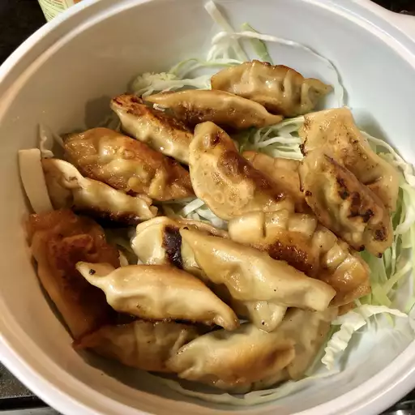

Authentic Chinese Pork Dumplings

Pork Dumplings Recipe
These Chinese dumplings are from Liana Cafe House in Seattle's International District. They sell these traditional fried
pork dumplings from a tiny takeout shop but with this recipe, you can see how to make them at home!
Ingredients:
Dipping sauce:
- ½ cup soy sauce
- 1 tablespoon seasoned rice vinegar
- 1 tablespoon finely chopped Chinese chives
- 1 tablespoon sesame seeds
- 1 teaspoon chile-garlic sauce (such as Sriracha®)
Dumplings:
- 1 pound ground pork
- 3 cloves garlic, minced
- 1 large egg, beaten
- 2 tablespoons finely chopped Chinese chives
- 2 tablespoons soy sauce
- 1 ½ tablespoons sesame oil
- 1 tablespoon minced fresh ginger
- 50 dumpling wrappers
- ½ cup vegetable oil for frying, or as needed
Instructions
- Prepare dipping sauce: Combine soy sauce, rice vinegar, chives, sesame seeds, and chile sauce in a small bowl. Set
aside.
- Prepare dumplings: Mix pork, garlic, egg, chives, soy sauce, sesame oil, and ginger in a large bowl until thoroughly
combined.
- Place a dumpling wrapper on a lightly floured work surface and spoon about 1 tablespoon of the filling in the middle.
- Wet the edge with a little water and crimp together forming small pleats to seal the dumpling. Repeat to form remaining
dumplings.
- Heat 1 to 2 tablespoons vegetable oil in a large skillet over medium-high heat. Place 8 to 10 dumplings in the pan and
cook until browned, about 2 minutes per side.
- Pour in 1 cup of water; cover and cook until the dumplings are tender and pork is cooked through, about 5 minutes.
- Repeat to cook remaining dumplings, adding more oil and water for each batch.
- Serve dumplings with dipping sauce.
FILLING VARIATIONS:
Shrimp Filling: Stir together 8 ounces finely chopped fresh shrimp, 1/4 cup chopped water chestnuts, 1 egg yolk, 1
tablespoon finely chopped Chinese chives or chives, 1 tablespoon less-sodium soy sauce, 1 1/2 teaspoon minced fresh
ginger, and 1 teaspoon toasted sesame oil in a bowl.
Mushroom-Tofu Filling: Cook 3/4 cup chopped shiitake or button mushrooms in a large skillet over medium heat until all
liquid has evaporated and mushrooms are tender; cool. Transfer to a bowl and mix with 1/3 cup pressed and chopped
extra-firm tofu, 1 egg yolk, 1 tablespoon Chinese chives or chives, 1 tablespoon less-sodium soy sauce, 1 1/2 teaspoons
minced fresh ginger, 1 teaspoon toasted sesame oil, and 1/4 teaspoon Chinese 5-spice.
Back to main menu